Search Engine for the
Death World
Whenever I hear
ghost stories, I usually get very curious about lives after death, and I
started to Google everything: Why do ghosts scare of garlic? Do vampires really
exist? Can dogs really see ghosts? But no
one can ever really give an answer that satisfies my curiosity. Well, yep, they're
not dead yet….
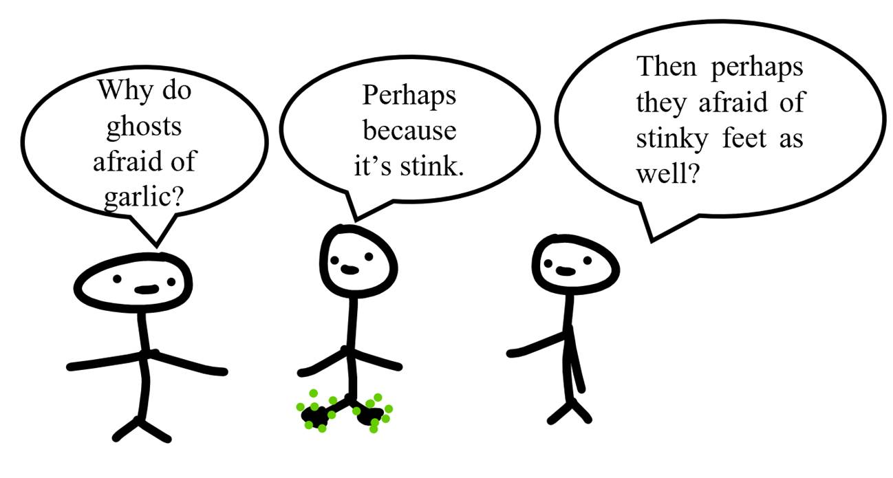
So, I guess I should
search for an answer from “Google of the death world” instead. But the question
is, does that exist? Because Google has not died yet… And that brings me an
idea, should I have a startup on a search engine like Google after I die? Why
not? Let's call it Noodle.

My Noodle search
engine will be created based on a recommender system. Recommendation
systems are well known for their usage on websites. For example, when you go to
Spotify, you see many recommended songs and playlists; or when you go to
Netflix, you see a lot of recommended movies, etc. They are all based on
recommendation systems, which recommend to users
things that they may be interested in. Successful recommendation, of course,
will turn into a lot of revenues. That's why Netflix created the one million
dollars “Netflix Prize,” an open competition for the best Algorithm to predict
user ratings for films, based on information like previous user ratings for the
movies, as well as other user and movie information.
Back to my Noodle
engine, when a user searches with a keyword, it needs to return a list of
results, ranked in order of relevancy and quality. If this is a new user, then
I probably don't know much about he/she other than her approximate location,
language,…. Yet, even this information is already useful. For example, when a
ghost search for places to eat in Vietnam, the returned results should be
different from a ghost searching for those keywords in Norway or Poland.
Noodle also needs to
care about a page’s quality. How do I know if a website has high-quality
content? One way is to measure how many websites include a link to this page. This
is pretty much like in real life, where famous people usually get more
attention. Yep, but ghost can generate a bunch of websites that include a link
to his own website brilliant.ghost just to
cheat the Algorithm. So, the search engine should also consider the time a
visitor spends at a website as an important factor in ranking the pages.
How about new
content? How do I evaluate its quality even though I don't know how much time
the ghosts will spend at these pages yet? Depends on the domain of that page.
For example, MrDracula.lalala is a popular
website. Then perhaps MrDracula.lalala/orangejuice
also have attractive content as well. But that does not mean not so popular
websites should be ignored. After ensuring that it does not contain junk
information/dangerous viruses by some spam filter, I would recommend such a
page to some users (maybe not in the first five results). If they like it, the
page is probably useful, and I would recommend it to more users, at possibly a
higher rank in the returned result. Otherwise, I will just ignore it most of
the time or push its rank lower.
Another thing to
care about is the value of the contents over time. Many things stay good over
time, but not all of the time. For example,
a website that gives advice to the ghosts on what to do when they
accidentally eat garlic may stay useful over time (maybe until the ghosts are
DNA modified so that they are no longer afraid of garlic anymore). Yet, a page on
pop music band G may not stay hot if the band has already retired due to changing
music trends of the society.
Neural Network & Natural Language Processing
But most importantly, how does Noodle understand what you
are searching for? Oh! I’m sorry, you’re not a ghost, or … at least not yet!!! Also, a word/phrase can be rephrased differently
with the same meaning. How can Noodle know that to select the best relevant
results? Well, now we have to talk about Neural Network, an Artificial
Intelligence technique, and Natural Language
Processing, a branch of Computer
Science that try to make the computer understand texts and spoken words in
pretty much the same way human do.
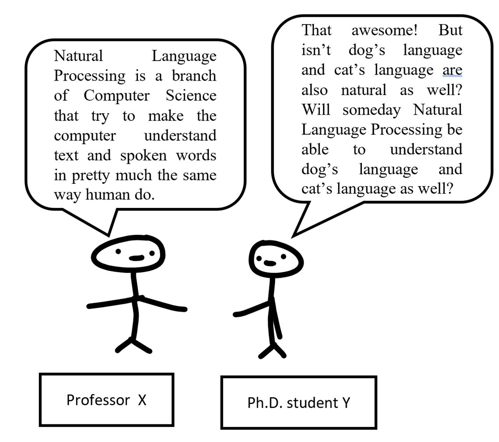
Neural network
The stuff that
powers a lot of technologies right now is Artificial Neural Network, or simply
Neural Network. It's inspired by how our brain process information. For
example, if we look at an image. Then, after receiving the signals, the neurons
will extract the important signals and send them via the synapses to the brain
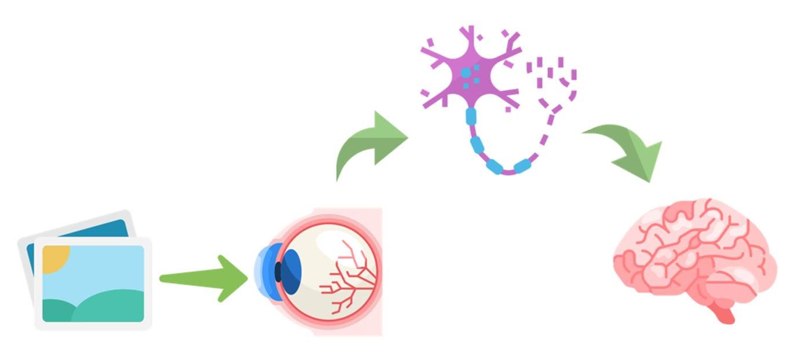
Figure 1
A neural network is inspired by this, and it contains many layers. Each layer is a set of neurons. In figure 2 below, each neuron is denoted by a round cake. The neurons in one layer are connected to the ones in the other nearby layer by the connections (similar to synapses in the human body). Each connection is represented by a line:
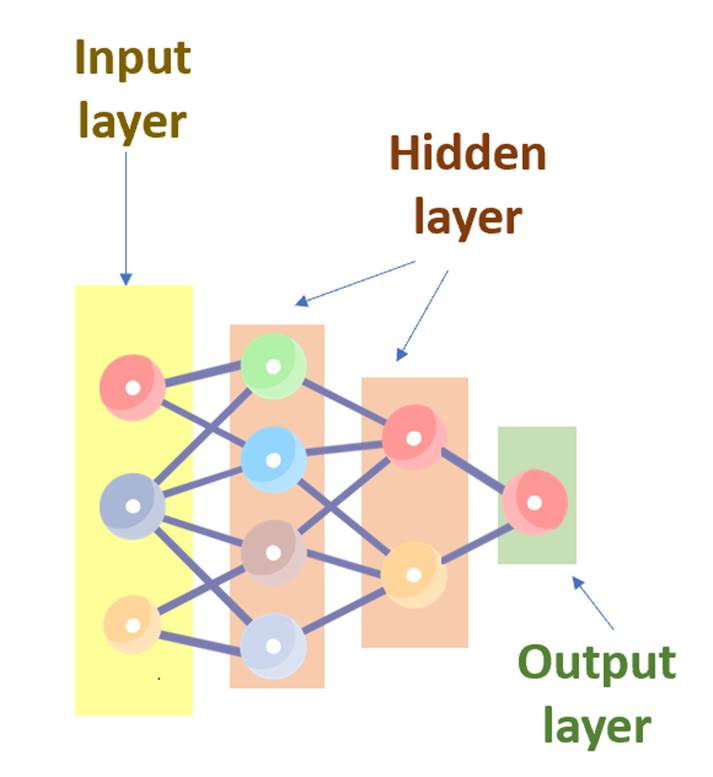
Figure 2
Note that the input layer is in
the yellow frame in the above neural network of cakes. When the data comes, the
input layer will grab it first (ghost cakes, able to eat stuff). After that, each
neuron in the layer will do some transformation (swallow) before passing it to
the next layer. The next layer contains the neurons in the red frame right
next to the yellow frame. We call it a hidden layer. (Any layer between
the input and the output layer is called a hidden layer. There are two hidden
layers in this case.) Again, each neuron in this layer will transform the
incoming information from the previous layer. So, you can imagine these layers
as the digestion systems of this cake neural network. Finally, the
transformed information reaches the output layer, where things end. The output
layer will give us the information that lets us know what we are looking at:
cats/dogs/bunnies/cherries/….
That's the idea. But actually, at first, the neural network does not work that well. It's rather like a newborn baby that knows very little about the world. So, we need to teach it. We teach it via a loss function and an optimization method to minimize the loss. This is similar to how a baby learns to walk, getting the pain but trying to get better and less pain, i.e., minimizing the pain and the number of collapses. But why a loss function, not a benefit function? Probably because people are usually risk-averse, so they like this term more. Anyway, not everyone is willing to take a vaccine even if it's safe 99% of the time, but 1% of the time causes blood clots and may lead to death!
Natural language processing
Since computers talk
and work in numbers, we need to convert text into numbers. One way is to use a
technique called Bag – of – word. This technique ignores the grammar, word order
and only counts the number of times a word appears. So, suppose that I have a
text like this:
Jenny likes ice cream. Her fridge likes ice cream as well.
Then I can create a
list of words that appear in this text:
A = {“Jenny”, “likes”, “ice”, “cream”,
“Her”, “fridge”, “as”, “well”}
Based on this list,
I can create a list to count the number of times a word appears in the text as
follow:
“Jenny”: 1, “likes”: 2, “ice”: 2, “cream”: 2, “Her”: 1, “fridge”:
1, “as”: 1, “well”: 1
(“Jenny” appears
once; “likes” appears twice; “ice” appears twice; …)
This counting gives
me a list of frequency for list A that I created (the blue text) as follows
[1, 2, 2, 2, 1, 1, 1, 1]
So, the first entry
of the list is 1, because “Jenny” appears once in the text. The second entry of
the list is 2, because “likes” appear twice in the text….
Next, to learn the
semantic presentation of the words, we rely on word2vec, which uses a
neural network to learn word associations of a large amount of text. It
represents each distinct word with a vector (a list of numbers). After that, it
can detect words with similar meanings, … So, now I can use word2vec in my
search engine to detect words with similar meanings to users’ input keywords.
Conclusion
Yet, when you search
online, the returned list of websites is ranked based not only on the pages'
quality but also on my preference, location, …. So you can see that there is a
lot of factors that the recommendation system have to consider to return
desirable results: the age of a page, user location, number of pages that link to
that page, etc. goal is different from preferences.
Last but not least, the running time
is important as well. If the speed of my Noodle search engine takes up to three
minutes to produce a search result, like how long it takes for
instant noodles to be ready, I think my users would never visit
Noodle.gh for the second time.
It cost me so much
time to think about this “after death” plan, but my friend told me that Google
hasn't died, but some other search engines have died. So, I'll have plenty of competitors!!
But WHO SCARE?
~*~
Recommended readings:
How Google uses artificial intelligence In Google Search on Search Engine Land
Noodle Map
Let's say that all the locations in the spirit world can be put into a map, and to complete my search engine ecosystem, I need to create something like Google Map as well. Let's call it Noodle Map:
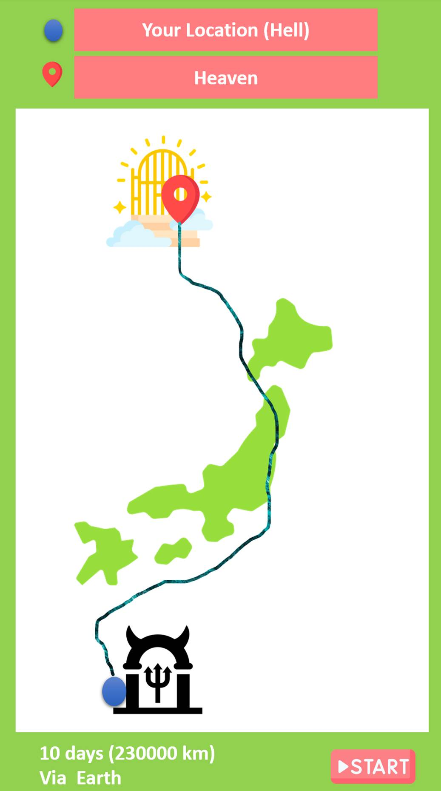
That means I have to find the shortest path between any two locations specified by my user.
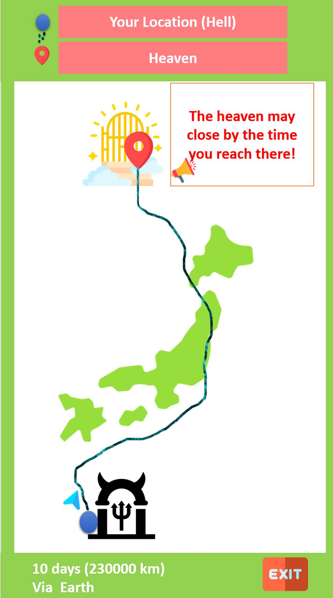
One way to do that is to use Dijkstra's Algorithm, which works based on the fact that any subpath from B to E of the shortest path from A to D is also the shortest path between B and E.
So, suppose that I have this diagram
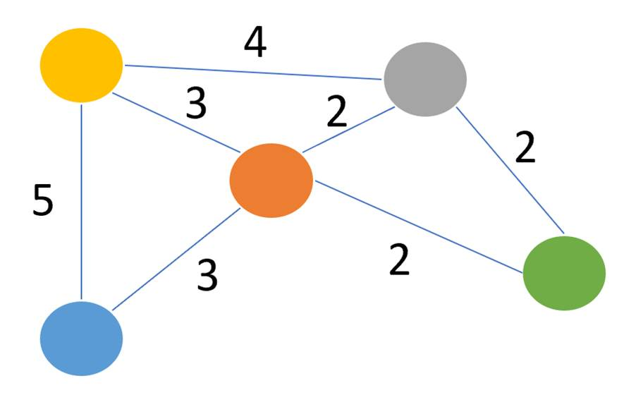
Here, each circle represents a
location, and each line represents a path between two locations. The number on
each line represents the length of the path between the two locations that the
line connects.
I want to find the shortest way to go from the yellow location to the green one. So, my starting location is yellow. Dijkstra's Algorithm starts by assigning to the starting location and assign to all other places. So, my diagram will become:
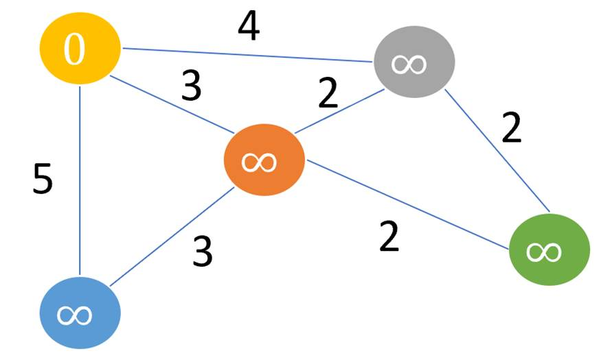
Now, we will go to each nearby location and update its path
length, which resulted in this diagram (note that we change the color of some
lines into red):
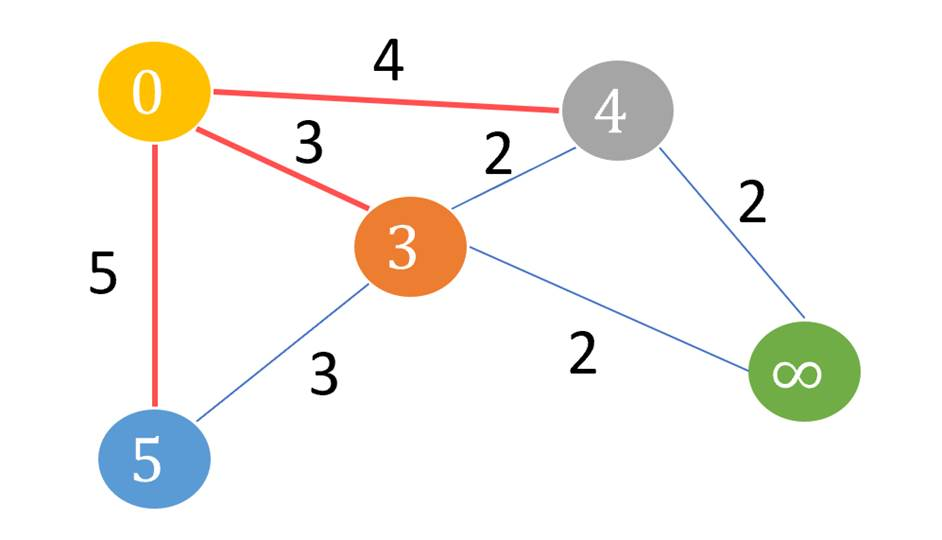
Next, if the path length of the adjacent location is lesser
than the new path length, ignore it (don’t update it). For example, if I am to go from yellow to
blue and then to orange, then the path length is 5 + 3 = 8, which is greater
than 3. So, I’ll keep the orange to be 3 instead of changing it to 8.
Also, avoid updating path lengths of already visited
locations.
So, after this iteration, the diagram still looks like
this:
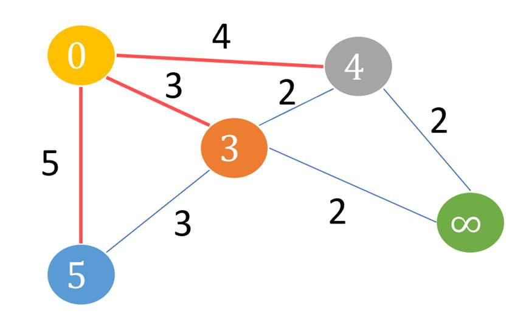
At each iteration, we pick the unvisited location with the
least path length. So, we choose 3 (orange) instead of 4 (grey) or 5(blue).
Hence, the green location is 3+2 = 5
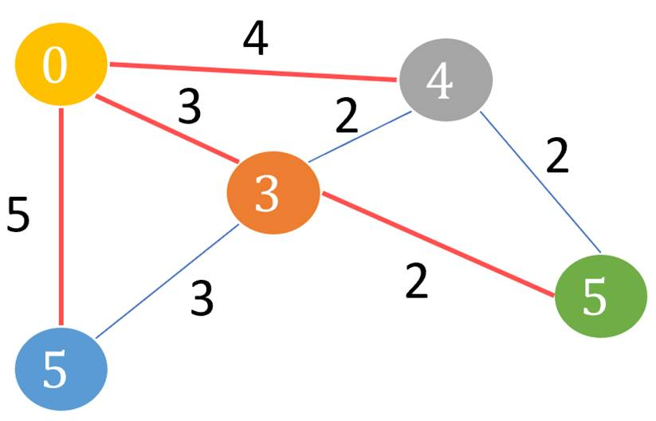
Now, after all locations have been visited, we can see the
shortest way to get from yellow to green is to go from yellow to orange, and
then from orange to green:
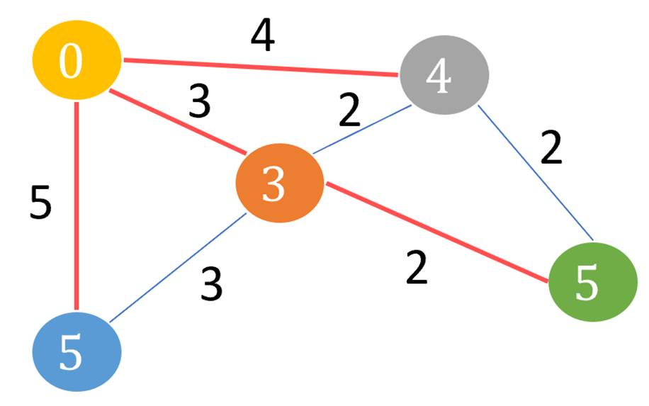
Now that you know Dijkstra’s Algorithm,
if you come to hell earlier than me, and nothing like the Noodle map is
available yet, I hope you can find the shortest way to heaven!!!
Online shopping for the dead world
I believe the spiritual world needs online shopping as well, and since my search engine startup for the ghosts may face many competitors, I need to have a backup plan. So, probably an online shopping store for the ghost instead? Let’s call it the Dead Sea! But this has nothing to do with the salt lake bordered by Jordan and Israel that you can walk on. I have no idea why they call Salt Lake a Sea, but I have a good reason for naming my shopping mall the Dead Sea: it’s a sea of products where the deads can shop.
For new users, at first, I don't know much about this individual other than their basic information. But since they had opened the account at my site, they are probably interested in shopping anyway. So, after they hit the keyword into the search bar, I will return a list of ranked results based on the product's reviews, prices,… This is also based on a recommendation system, and the way it generates search results is fairly similar to how the returned results at my Noodle search engine are ranked.
Next, suppose that the user clicks on an item. Yet, I'm not sure if the product will make my user satisfies. So, I will also generate similar products to the current item that the user is viewing to ensure that if he/she is not happy with the current item, he/she can quickly navigate to similar products.
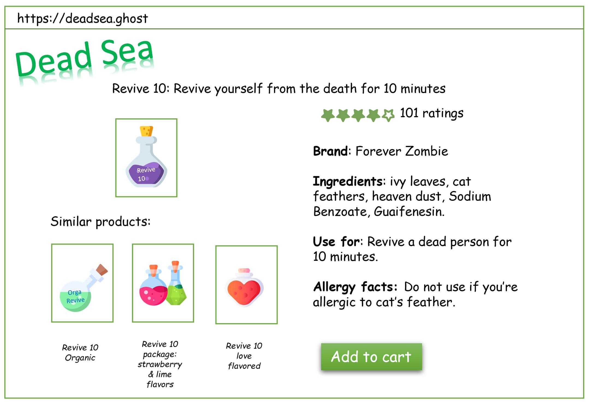
But that's only
shopping for one product. I need to maximize my profit. So, it is worth trying
to get a ghost shop in a combo if possible. For example, I am to buy
realization papers, which can turn hand-drawing into real things in a short
amount of time. Then, I may be interested in buying a realization pen
to draw on that type of paper as well.
So, the interface
for my online shopping site would look like this
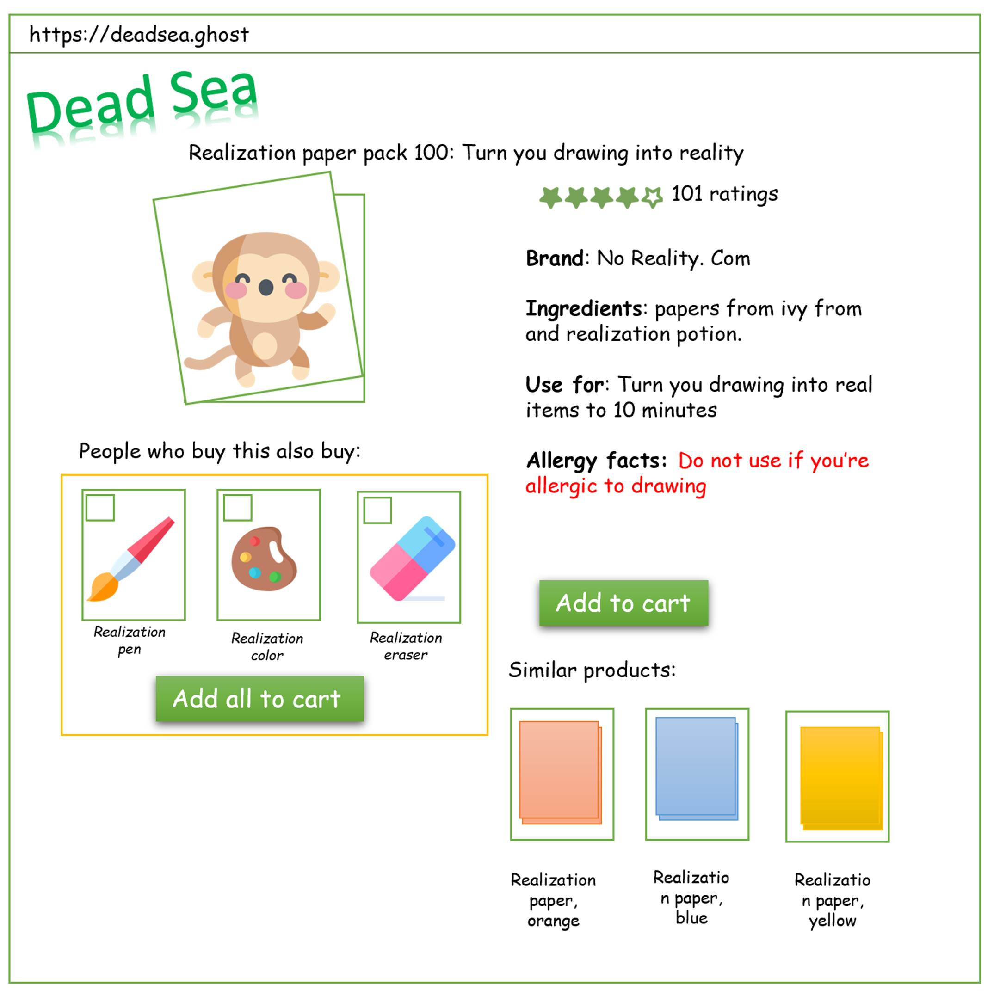
But how do I do
that? I'll create a table where the cell at the row, column let me know how much the item and item related. So, suppose that I have the
items: realization papers, realization pen, realization eraser, revive 10. Then
I can create this table:
|
|
realization papers |
realization pen |
realization eraser |
revive 10 |
|
realization papers |
1 |
0.9 |
0.8 |
0.2 |
|
realization pen |
0.9 |
1 |
0.8 |
0.1 |
|
realization eraser |
0.8 |
0.8 |
1 |
0.15 |
|
revive 10 |
0.2 |
0.1 |
0.15 |
1 |
How did I construct
that table? Well, you're probably familiar with things like she looks so
similar to her mother, your coat looks like mine. Yet, when talking with
computers, things must be numeric. So, suppose I have a vector , which represents the information about
an item A, and a vector , which represents the information about
item B. Then, I would like to use a measure of similarity that satisfy these
conditions:
1. The similarity between A
and itself is 1,
2. The similarity between A
and B is always between 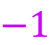 and 1. The closer it is to 1, the more the two
items are related. The closer it is to , the more the two items
are unrelated.
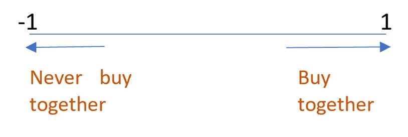
3. The similarity between A
and B is equal to the similarity between B and A.
And cosine is a perfect
measure in this case. Yep, I'm talking about the measure of cosine of the angle
between the vector and vector ,
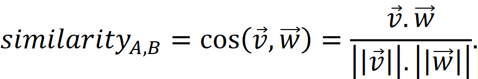
It's clear that 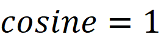 means that the angle between the two objects
is 0, and so they're very related or identical; 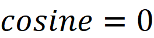 means that the angle is , meaning they're unrelated. If 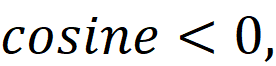 then obviously A, B are never purchased together.
However, since the
store has a lot of products, it would be inefficient to create a huge table
that tells me how each pair of items is related, just like we don't need to
care about pair of items that have negative cosine similarity. So, I'll use
something similar to Amazon's strategy:
For each item in the catalog:
For each customer K
that bought
For each item that K bought, record that someone bought and
For each item compute the similarity between and .
~*~
If you like this book, please don’t forget to buy products from deadsea.ghost after you die. If you die earlier than me, please consider other alternatives! Don’t kill me just because you want me to die earlier to start up the website deadsea.ghost for you to purchase stuffs!
~*~
Recommended
readings:
Amazon.com
Recommendations Item-to-Item Collaborative Filtering by Greg Linden, Brent
Smith, and Jeremy York.
Assistant for the Ghosts
I don't possess an
Ok Google, but a friend of mine does. And it's fun to watch them talk with Ok
Google asking for the weather, controlling light, ... From these conversations,
I learned that Ok Google is … not so Okay. First, it seems to
experience some bad hearing. So, you need to speak loud enough and clear enough
to make it hear. Second, when having conversations with my friends, it doesn't
seem to remember what my friends said before.
Imagine something
like Ok Google exists in the death world. That would be very interesting. I
have never been able to hear a ghost, even though with the number of people
that have passed away on this earth, there're probably a lot of ghosts among
us. So, I think maybe the voices of dead people have the frequency out of
living human hearing range (around 20Hz – 20000 Hz). So, it would be
interesting to know how Ok Google or similar things of the death world
recognize what the ghosts say. I guess they experience worse hearing, but I don't
know about their memory loss.
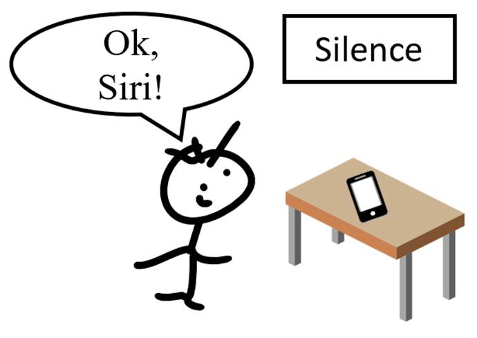 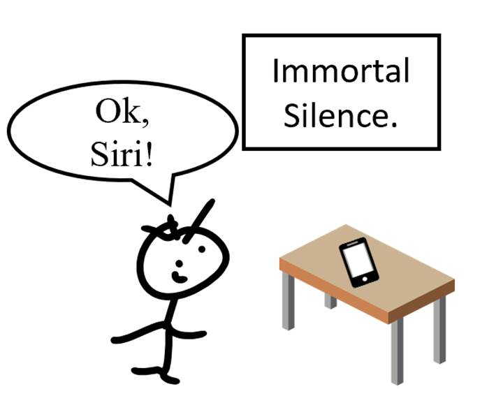 
But if such a thing
has not existed in the dead world yet, I am probably interested in creating
one. In that case, I’ll call my assistant Lax Wanderer, and let's hope that it will
be powered by some magical stone so that even though ghosts speak in some
special frequency zone, Lax will still be able to hear it. It should be able to
walk also. Amazon Alexa is only able to rotate in the direction of its owner. So,
it can only track its owner on its viewing range. Yet, Lax Wanderer will track
its owners by following them. This will help me learn more about the users, and I can use this
information to make better advertisements for my Noodle search engine or better
predict what the customers are more likely to buy for my Dead Sea online
shopping mall.
To make the ghosts
enjoy having Lax Wanderer's accompany, I'll make it look so cute that no ghosts
can resist it. So, I'll make it look like a pitcher plant, but with feet, and
the pitcher part should be in white (according to ghost stories, then ghosts
usually appear in white, so I guess they like that color):
To better do this, it's good to understand why Ok Google and similar tech stuffs experience some bad hearing and forgetting symptoms. Ok Google, Amazon Alexa, Apple’s Siri rely on speech recognition, and speech recognition is based on sequence – to – sequence learning. Sequence – to – sequence learning is about converting sequences from one domain to another domain, such as translating a sentence from English to Vietnamese or converting from audio to the corresponding text (Speech-to-Text technology, also called Automatic Speech Recognition). Unfortunately, this technology can’t even remember a long sentence, not to say a few long sentences that my friend spoke before Ok Google totally forgot.
Luckily, something called an “attention module” appeared in recent years and came to the rescue. The idea of attention is like how English speakers listen: they pay more attention to the words that the speaker stresses. So, for example, if I have the phrase “Monday is the first day of a week.” then the words in bold are the important words, and the neural network will try to pay more attention to such words. By keeping only the important information, the neural network is able to remember longer sentences than before. Yet, it’s still not enough to have an assistant with good memory.
Back to the assistant for the ghosts
I remember a story
in Vietnam as follows: two elderly men, both with hard hearing, want to live
healthily. So, they decided that they would wake up early in the morning and
exercise together. 4 AM the next day, the two guys walk together, and because
they have bad hearing, it's like: “Pardon me?”, “Can’t hear you. Can you speak
louder?” Then, their conversions wakened up the whole town as they walked
around. Since Lax Wanderer is able to walk, We only
need one ghost with bad hearing, along with his Lax Wanderer, to wake up
the whole cemetery!